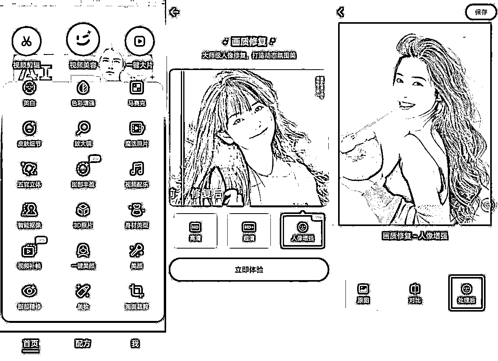

来源：https://o0yvn3o31a.feishu.cn/docx/ObSodGXNAobxk8xuc5icGXo2nVe
大家好，我是黄岛主！
今天给大家分享最近特别火爆的动漫头像项目，操作上也是非常简单，主要就是把真人的照片修改成漫画风格，一单的利润20左右，小白看完都可以操作的，基本上没什么难度。
我相信很多圈友都见过这样的漫改图片， 而且也有人正在用这种漫改图片当头像，可能也是一种时代的潮流，就像当年非主流一样，目前这种漫画头像还是比较吸引人的，所以有的人突然有一天遇到这种漫改头像都想去拥有，尤其是在第三方平台上看到就想获取。所以，这就产生了我们这个漫改项目！
目前的话，我们是通过小红书发布图文或视频，有人询问就引流到私域成交变现，这种图片发布到小红书后，其点赞量还是很可观，只要你软广告做到的到位，用户会主动询问你怎么制作，这个时候我们通过私信引流到微信，然后给用户做图，收费10-20元不等，多号矩阵操作基本上很吃香。
最重要的是：目前做的好的人，一天已经可以有三五百块的收益了，虽然不是很多，但是确实是一个很不错的副业。
可以看下小红书上的案例图，你也可以搜“漫改”关键词，自己去看看：
操作这个项目也是比较简单的，主要就是制作漫画头像，然后发布小红书，最后引流到微信并转化，挣个流程简单粗暴，在虚拟项目里可以说非常简单粗暴。如果你感兴趣，那么请继续阅读：
首先，我们先把小红书号给准备好，注册的流程来看下，防止小白不懂，我就简单的说下：
注册流程：手机下载小红书APP，选择手机号登录，输入手机号获取验证码，勾选已阅读并同意，然后点击登录完善信息，选择女，年龄26-32，女号方便引流，兴趣爱好可以选择头像、动漫等，如果前期没选，后期在小红书首页右上角我的频道里点击编辑添加。
名字设置：比如某某漫改、某某绘画小馆、某某头像，也可以起比较有诗意的名字都可以，可以搜下同行去参考同行写一下。
其他资料：简单设置下就行了，最好资料能设置100%，能填写的都填写了！
好，账号完成注册之后，我们要安排下养号工作：
第一天：打开之后首页看推荐里的，早中晚时间段随便刷一刷，想看啥就看啥，让平台认为你是正常用户。
第二天：搜关键词“漫改、漫画头像”等，也是早中晚分时间段去看，看多长时间没有规定限制，按照这个时间段看就行了。
第三天：继续按照第二天去看哈，可以适当点赞评论收藏！
第四天：和第三天一样哈！
第五天：发作品，看看小眼睛能否100以上，在的话就可以继续发！
总结下：一定要保证账号的活跃度，每天都来刷一刷就可以，其他没有硬性要求！
账号注册完成了，养号也完成了，剩下的我们看制作流程了！
来说下图片制作的方法：
第一步：素材寻找
我们刚开始发的时候没有素材，可以在小红书、抖音等这些平台找一些美女的图片，总之你前期最好有一个自己的美女素材数据库！
找到图片之后，点击右上角箭头，复制链接，打开微信，搜索轻抖去水印小程序，点击去水印，粘贴链接进去，看一段广告，把图片保存到相册，就是没有水印的照片了。
第二步：画质修复
下载wink，把真人的照片素材导入到软件当中高清处理一下，点击画质修复，选择VIP版的，还可以用里面的VIP功能，破解版的可以找我获取，VIP的功能免费试用。

第三步：生成动漫
下载并打开美图秀秀，点击AI动漫，第一个图生图，点击导入照片，选择需要生成的图片，可以再添加一些描绘进去，里面还有很多AI绘画的功能，大家可以去研究一下，生成3张图片供参考。
好了，三步就可以制作出漫画头像，看着很简单，是的很简单，但是这个需要执行力哈！
既然头像制作好了，来说下发布：
我们发布，一般是直接点小红书里的创作灵感，不要从加号去发视频！
也就是在小红书里点我，找到创作灵感，如图：
到灵感里，能看到很多，我们只要找关于这种领域的都可以发，如图：
从这里发，主要是流量会更大一些，现在基本上我们发小红书都是从这里发哈！
具体发布很简单：我们选中相应的漫改图片，点击下一步，里面有图文模板、视频模板选择，配上欢快的音乐发布就可以了，标签话题参考同行模仿一下，就可以了。
这里要注意：不要发真人的图片，会涉及到侵权！
发布完之后，我们要去引流了，这里我说下最简单最常用的引流方法：
基本上就是包含了：简介引流、建粉丝群、评论置顶引流、打卡引流、背景引流
1、简介引流，在简介里面直接留联系方式，但是前期账号没做起来不推荐这种方式，容易被平台检测封号。
2、建粉丝群，有没有粉丝都可以创建，打开小红书首页，点击右下角消息，右上角有群聊，点击创建群聊，可以给他改名字，比如动漫头像群等，点击公开展示或者不公开展示都可以，点击立即创建，右上角三个点有设置，选择关联笔记，关联自己发的笔记，然后主页进行展示。
点击群管理，系统默认的欢迎语可以关闭，如果前期没有太多成员，可以让别人直接进群，后面群多了，或者做起来以后，就需要确认进群，针对自己的实际情况去设置一下就行了，打开系统通知，小红书同行比较多的，如果不能及时回复用户信息的话，很容易就找别人了，我们要站在用户角度去思考问题，及时回复。
3、评论置顶引流，有人问就直接在底下评论就可以，也可以去同行热门的作品地下评论引流，把自己的账号改成漫改的名称，配上一张动漫图片就可以了。
小号在评论区带节奏，比如说有个人问有没有教学，求图之类的，你进行回复，由于平台限制，所以加老师请移步加微信就可以。
4、打卡，主页下方这个位置出现的四个圆形托，上面带的微信号，其实就是小红书的打卡记录，点击我的头像，点击打卡，设置好打卡名称和里面的文字就可以发布，但是如果直接放咨询、微信这些词会被提示违规，可以试下同音字，或者参考同行是怎么放上去的。
5、背景引流，制作背景可以用一些比较好看的图片，也能可以直接留联系方式
可以打开这个网址，https://photofunia.com/先把网页翻译成中文，里面有很多图片模板，选一个喜欢的，输入微信号 ，用微信的谐音输入，点击下载就可以，下载不了可以截屏。
以上是引流方式，都可以操作看下哈！
最后，我们来说下变现方式，我给的建议是这些：
1、制作图片收费，在小红书上开一个店铺，销售漫改照片，定价9.9-19.9元之间。
2、引流私域卖货，素材在抖音、小红书上坚持发一段时间基本就会有粉丝，很多粉丝对这种没有抵抗力，有一定粉丝量后使用群聊功能，单独发容易被举报，个人简介里面写一文案引导到私域转化交易，把朋友圈打造好，吸引潜在客户，只要做得好，每天收入300+不是问题，非常简单，适合初学者上手，利用信息差来赚钱。
3、收徒，可以参考做的好的同行，视频素材可以用剪映加点音乐，坚持一个月肯定有效果，账号做起来之后可以把一套玩法教给别人，虽然不是刚需行业，但是市场需求还是存在的，只要大家把图片选好，改的比较好看，肯定有人需要。
具体我也录制了视频教程，也可以参考：
写在最后：
整体流程写了出来，感兴趣可以去操作看看，如果你有问题也可以跟我交流！